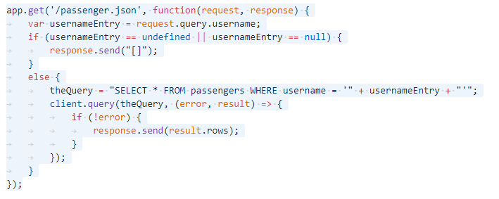
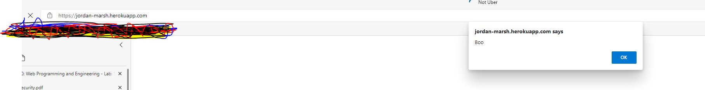
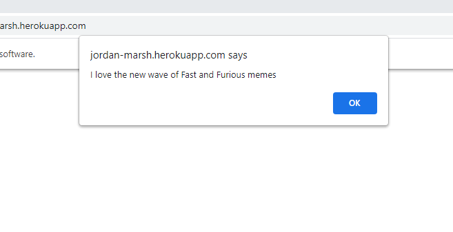
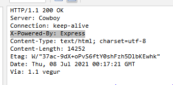
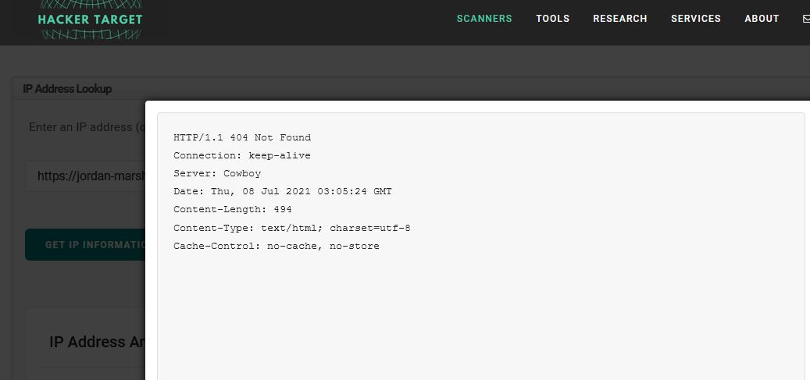

This report is a vulnerability analysis of the website Not Uber located on https://jordan-marsh.herokuapp.com/. This report aims to locate, analyze, and resolve any vulnerability abilities the site might have.
The analyst for this project wanted to do blackbox testing but used applications to try to figure out what was wrong with the web app. The application of OWASP ZAP version 2.10.0 and the Burp Suite Community Edition v2021.2.1 were used to record and log HTTP(S) traffic and intercept requests and responses HTTP requests header fields and request body including query strings and data. Alternative applications that could have be used are Tamper Data for Firefox and mitmproxy. One thing to note, even if the applications say that there is a vulnerability it does not mean that it is there. It could be a false positive.
During the analysis, two issues were discovered. There was DOM-related cross-site scripting issue and a Server Leaks Information via "X-Powered-By" HTTP Response Header Field(s) issue
The web hack is happening due to the following code.
The code here can allow the an attacker to send something like the below image when they change
<script>Alert(=))</script>
High
Within The OWASP application, it flagged two DOM-related cross-site scripting issues. Cross-site scripting is a very common vulnerability in web applications. This type of vulnerability allows attackers to inject scripts into webpages. When the user goes to the website of https://jordan-marsh.herokuapp.com/. They are met with videos, an alert detailing how the site has many Fast and the Furious memes, a 'you mad?'/ troll face pop up. The OWASP application mentioned that there was a secondary area of the Cross-site Scripting but this may have been a false positive.
Here is the result of the DOM-related cross-site scripting.
 It is recommended that the developers remove the ability for data to be interpreted as code or do not allow users to use special characters while they input data.
In OWASP:
Low
This allows an attacker to gain insight into what tools and servers the target is using. Lets say a user was using an old and outdated server, when the attacker see this they can figure out how to exploit the server's weaknesses.
In OWASP:
Hack the target (which gives us the server name.)
The web designer should make sure that this type of information is hidden. The server shouldn’t send website, and server information in the header.
Do not hesitate to contact Comp 116: Introduction to Security at Tufts University for any more help. I would also like to reiterate to not only use the tools to find out what it wrong with a website because they can be false positives.